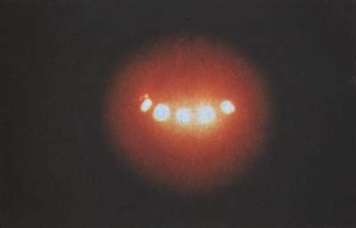
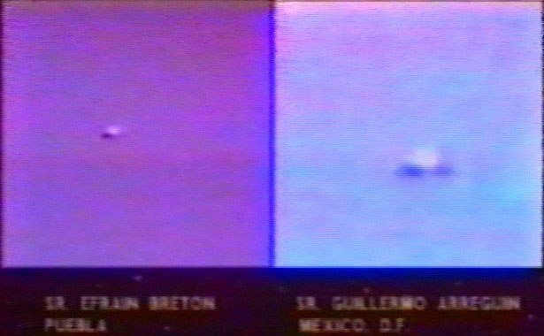

A Nr. Troy (Ohio), un père et sa fille de 12 ans
observent un grand objet argenté, à 15 ou 20° au-dessus de l'horizon. L'objet a une forme de stylo ou de cigare, et
est évalué entre 1/2 et 1 mile de distance. Les témoins sont habitués aux avions, résidant à 12 miles au Nord-Est de
l'aéroport de Dayton Cox. L'objet a 4 fois la longueur et 2 fois la largeur d'un appareil commercial, sans queue,
ailes ni fenêtres, ni aucun son émis. Il y a 2 autres zones sombres ou grisâtres sur la surface brillante. Lorsque
le père va chercher sa caméra vidéo, l'objet disparaît dans un flash vert.
matin Un vol de 5 hélicoptères militaires verts est observé
au-dessus de la zone où l'objet a été vu, puis juste au-dessus de la maison des témoins Franklin Reams,
MUFON UFO Journal, No. 291,
1992-07.
Photographie prise le 7 près de Atlixco par Ruben Castro (par la police judiciaire de Puebla selon d'autres
sources)

Près de Atlixco (Puebla, Mexique), des policiers en mission anti-droguent photographient
un phénomène lumineux (ci-contre).
Près de Nr. Selkirk, Borders (UK), le camionneur Steve Hallett conduit le long de la route A7, avec en vue l'antenne de transmission TV de la
région, lorsqu'il observe soudain en l'air un grand appareil discoïdal lumineux, d'environ 40 pieds de diamètre.
L'objet possède des lumières colorées et semble avoir un dôme à son sommet. Les instruments du camion s'affolent. Il
s'arrête, faciné, et observe l'ovni pendant 15 secondes environ avant de le voir disparaître dans le ciel nocture à
une vitesse impressionnante.
Steve Hallett est inteviewé par Jill McPherson sur Radio Borders.
Observation du 11 au Mexique

A Mexico, un objet métallique brillant surgit du ciel, à gauche du soleil noircit par une
eclipse, observée par des milliers de personnes. L'objet reste suspendu dans le ciel durant une bonne demi-heure, si
bien que 17 observateurs, situés en différents points de la ville, seront en mesure de filmer l'ovni. L'analyse de
ces bandes vidéo indiquera par la suite qu'il s'agit d'un objet à structure métallique, tournant à grande vitesse
autour de son axe.
A Mantes-la-Jolie (Yvelines), 1 témoin observe un phénomène blanc très lumineux et silencieux
de la taille d'un petit avion de tourisme durant 15 s environ GEPAN, cas de type C.
Un groupe de campeurs observe une lumière sphérique blanche au-dessus d'un champ
voisin. A plusieurs moments, une lumière rouge plus petite émerge de l'objet blanc et descend au sol, où elle doit
se déplacer un court moment pour rejoindre et refusionner avec le globe blanc. L'observation dure 1 h Page, Christian & Bourbeau, F. C.: Ufology Research of Manitoba
associates.